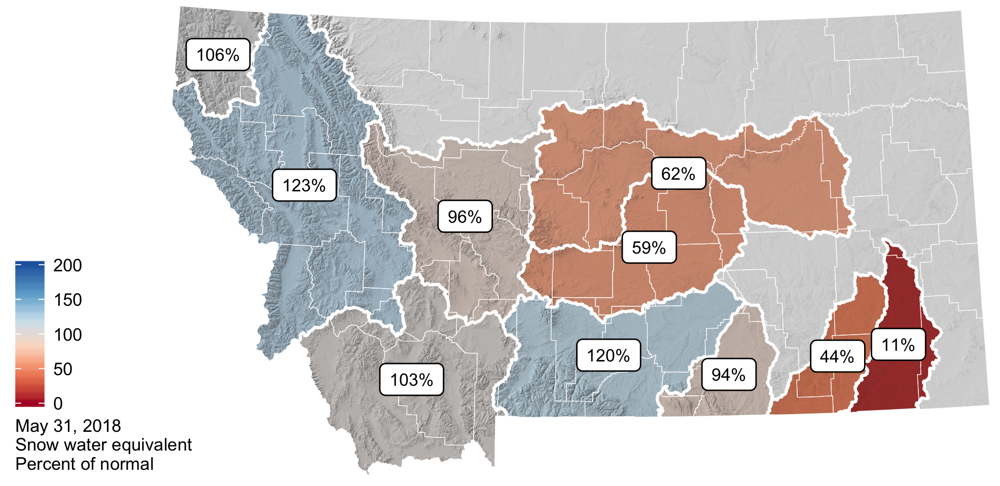
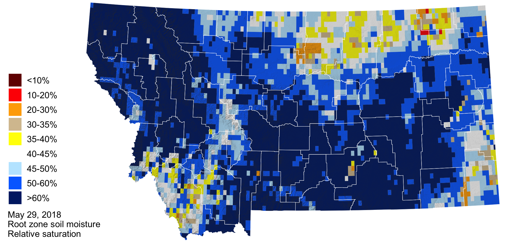

April–May, 2018: Current conditions
 Temperature
Temperature
The lingering effects of this winter’s La Niña contributed to below normal temperatures in early spring. As the La Niña transitioned to ENSO neutral in May, we began to experience normal to above normal temperatures across the state. The cooler than normal temperatures lasted through late April and contributed to a delay in growing season onset and a protracted snowmelt. When temperatures began to increase in May, our above normal snowpack started to melt and contributed to significant flooding.

The graph below compares historic daily temperatures (bands and dashed lines) to current daily temperatures in April and May 2018 (jagged lines) across Montana. Red colors are the high temperatures, and blue colors are the low temperatures. The bands represent the range of recorded temperatures during the 1981–2010 period on any given day. The dashed lines represent the average high and low temperatures during the 1981–2010 period.

Growing Degree Days (GDDs)
The map below shows the accumulated growing degree days (GDDs) since the last day below 24ºF, which is the temperature damaging to wheat once it reaches the jointing growth phase. The cooler than normal spring temperatures contributed to slightly lower than normal growing degree days across the majority of eastern and central Montana. Here, growing degree days as of May 18th range from ~300 to 600. The mountain and valley regions of northwestern Montana have experienced slightly higher than normal growing degree days (+50 to +100) and the current number of accumulated growing degree days range from 100 to 600.


Precipitation
In general precipitation was above normal most of the state during the spring. However, there were isolated pockets of below normal precipitation (0.75 to 2.2 inches below normal) in portions of northeastern Montana, extending along the highline from Sheridan to Hill counties and for southwestern Montana in Beaverhead County. These were counties that already had dry conditions from last summer’s drought.

The graph below compares historic daily precipitation (band and dashed line) to current daily precipitation in April and May 2018 (jagged line) across Montana. The band represents the range of recorded precipitation during the 1981–2010 period on any given day. The dashed line represents the average precipitation during the 1981–2010 period.
 Snowpack
Snowpack
Snowmelt still continues at higher elevations across the state due to the cooler than normal spring temperatures and above average winter snowfall. This will contribute to elevated soil moisture and higher streamflow into June and reduces the potential for drought and wildfire.

 Soil Moisture
Soil Moisture
Soil moisture is factored into forecasts as an indicator of wet or dry basin conditions and the potential for drought or flooding. The majority of Montana has soil moisture surpluses due to our above normal winter snowpack and above normal rainfall over the last couple of months. Pockets of soil moisture deficit exist in northeastern Montana and southwestern Montana and are associated with last summer’s drought (e.g., eastern Montana) and precipitation deficits this winter and spring.

 Drought
Drought
As of late May, lower than normal precipitation has led to abnormally dry conditions along the highline in north-central and northeastern Montana.